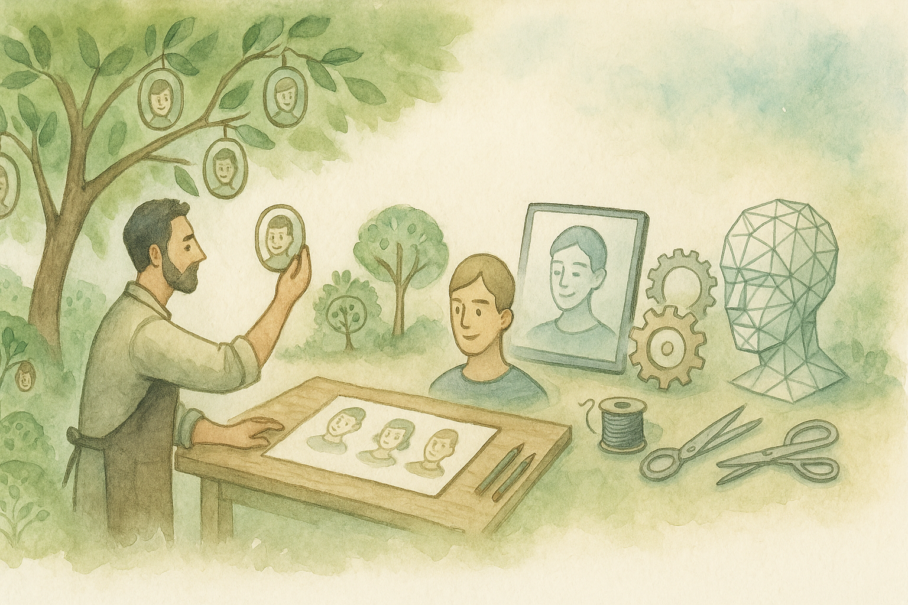

FR
|
EN

✉️ Me contacter
🌿 Mes créations IA
LES COMPAGNONS SILENCIEUX
Voir sur Ko-fi
HumAIn
À venir…
Identités fictives
À venir…
Murmures Numériques
Découvrir
🎙️ Test vocal d’un compagnon IA
...
🎤 Parler